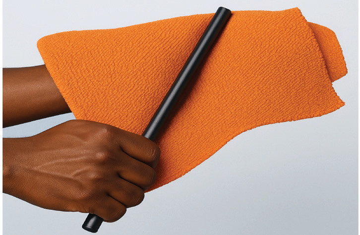
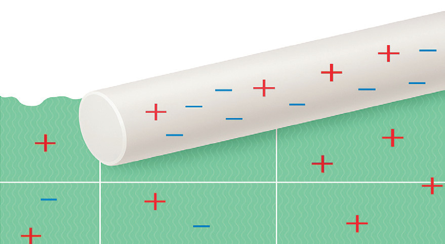

net negative charge, while the electrons missing from the wool lead to a net positive charge. The combined total charge of the two objects remains the same. Charging is conserved, which means that individual charges are neither created nor destroyed. All that happened was that the positive and negative charges were separated through the transfer of electrons.


Law of conservation of charge
A charge is a characteristic of matter that causes it to create and experience electrical and magnetic effects. The underlying idea behind charge conservation is that the system’s overall charge is conserved. It can be defined as follows:
When two objects in an isolated system each have a net charge of zero, and one body transfers one million electrons to the other, the object with the surplus electrons will be negatively charged, while the object with fewer electrons will have a positive charge of the same magnitude. The total charge of the system has never changed and will never change.
Electrostatic force
The interaction between static electric charges produces a force known as the electrostatic force. For instance, when plastic rods are charged by rubbing them with fur, they repel each other. Similarly, glass rods rubbed with silk also become charged and repel one another. Additionally, plastic rods attract the fur, while glass rods attract the silk.
French physicist Charles Coulomb measured the force between two charged objects using a torsional balance, establishing a unit of electrical charge named the coulomb in his honour. A coulomb is a much larger quantity of charge than that normally produced by rubbing.